Arknights
Endfield 官网拆解
这不是观感笔记。以下每个色值、着色器公式、时序常数，都来自 endfield.hypergryph.com 的计算样式、九份样式表、二十个 Next.js chunk 与六个点云二进制的直接抽取。着色器里写着中文注释——这是一份能读到作者呼吸的源码。
Next.js App Router实锤
three.js 自封装「E.P.S」点云系统实锤 · 控制台自名
六地标点云 21.8 万点 · 裸 Float32实锤
自研 @hg-web/trans-video 亮度抠像实锤
anime.js 时序实锤
签名黄 #fffa00 词频 56实锤
设计画布 2560×1440 · rem 全站缩放实锤
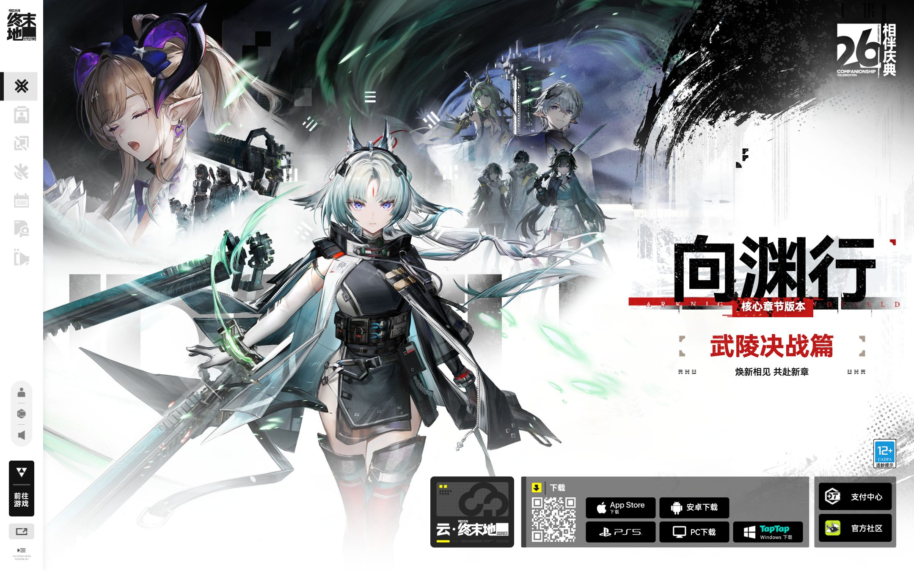
01↘
Positioning
定位与设计意图《明日方舟：终末地》官网（v4，当前版本主题「向渊行 · 武陵决战篇」）。它是游戏工业美学的门面：白纸黑字的工程制图 + 荧光黄警示 + 点云全息。整站像一份被扫描进终端的纸质技术档案——纸的部分用印刷语言（套印错位、警示条、图例编号），屏的部分用仪器语言（点云、扫描线、故障）。
| 意图 | 证据 |
|---|---|
| 工业制图感 | 黄底分隔带里的螺栓爆炸图、图标轨、REC 括号、编号 1/31（实锤：截图与 CSS 模块名） |
| 印刷套印错位 | 品红 #ff1aac 与荧光绿 #00ffa2 的错位描边与三色条（实锤：CSS 词频 6/9 处） |
| 仪器全息 | E.P.S 点云 + 扫描线 + 激光束 + 故障位移（实锤：着色器原文） |
命名即宣言：点云系统在控制台自称 [E.P.S]（打印性能测试与画质分级日志）。六个地标模型 spaceship（帝江号）、anchor、factory、pile、trinity、enemy 以裸 Float32 二进制下发——不是 glTF，不是 Draco，是最朴素的 xyz 流。快、小、无依赖，这是把「工程味」贯彻到传输层的选择。
营销层 vs 产品层：官网只做「世界观陈列 + 预下载转化」；账号、支付、社区走 SDK 与独立系统（hg-account-web-sdk 实锤）。左轨与底部下载矩阵永远在场——所有戏剧性都服务于「前往游戏」。
02↘
Color
色彩系统近黑 #191919 与纯白的双极对撞，中间只留一支怒吼的荧光黄。点云的颜色写死在着色器里：常态灰 vec3(.8,.8,.8)，扫描带内瞬间变黄 vec3(1,1,.2)。
档案黑#191919实锤 · 词频 84 全站第一
制图白#ffffff实锤 · 词频 77
签名黄#fffa00实锤 · 词频 56，唯一强调
仪表灰蓝#35373c实锤 · 词频 15
银灰#d9d9d9实锤 · 词频 21
套印品红#ff1aac实锤 · CSS 6 处
套印荧光绿#00ffa2实锤 · CSS 9 处
扫描带黄vec3(1,1,.2)实锤 · 顶点着色器
点云常态灰vec3(.8,.8,.8)实锤 · 顶点着色器
03↘
Type
字体系统Dijiang · Lore · Endfield
1 / 31 — 26 COMPANIONSHIP
向渊行——武陵决战篇 · 焕新相见 共赴新章
| 字族 | 用途 | 捕获状态 |
|---|---|---|
| Novecentosanswide-Bold/DemiBold/Medium | 英文大展示 | Bold/Medium woff2 落盘；DemiBold 声明在册 |
| Gilroy-Light/Medium/ExtraBold | 数字、副标 | ExtraBold 落盘 |
| SpaceGrotesk / ProtestStrike / Roboto-Regular/Black | 局部装饰与备用 | ProtestStrike、Roboto Black 落盘 |
| SansRegular/Medium/Bold/Black + SDK_Sans-* | 中文全域 | fontsLoaded 探针在册；文件由 SDK 注入，未捕获（局限声明） |
04↘
Layout & Scroll
布局与滚动rem 全站缩放（JS 原文实锤）
base = 16px 横屏: w/h > 2560/1440 ? base×h/1440 : base×w/2560 竖屏: w/h > 0.5625 ? base×h/1920 : base×w/1080 html.style.fontSize = r + "px" // 设计画布：桌面 2560×1440 / 移动 1080×1920 // 鸿蒙系浏览器（HarmonyOS/Huawei/HeyTap…）额外重写 // viewport meta：width=outerWidth×DPR, scale=1/DPR
整站尺寸全用 rem——等比缩放的「图纸」，任何屏幕上比例关系不变。这是国内大厂 H5 的经典手法在桌面端的全站化。
全屏分区滚动（实测 + CSS 模块名实锤）
| 分区 | 00-Loading → 01-Home → 02-Operator → 03-Lore → 04-Information → 05-Gameplay → 06-Notice → 08-AIC → 09-Calendar |
| 驱动 | 滚轮一档切一屏，hash 同步（#home/#operator/#lore/#information/#gameplay/#aic/#calendar/#notice），实测切换动效约 1s 级 |
| 滚动提示 | scrollTipMove / scrollBreathing 关键帧（呼吸 + 下移） |
| 加载页 | 00-Loading fadeIn + OrigQuery_rotate（源石菱形旋转）+ 进度百分比 |
| 唯一自定义贝塞尔 | cubic-bezier(1,0,.7,1)——重进重出的「机械闸门」曲线 |
05↘
E.P.S Point Cloud
点云系统全解剖 · 签名装置Lore 章的六座地标（1/6 帝江号起）是全站的心脏。它不是「图片转粒子」——而是预烘焙的 3D 点云：六个裸 Float32 二进制（合计约 218,441 点、2.6MB），运行时归一化到高 1900 的舞台，由三条扫描线逐层点亮，扫描期间天花板向扫描带附近的点投下激光束。
Live Specimen真实数据演示 · anchor.bin 降采样 3,000 点（原 7,484）
E.P.S // ANCHOR — STANDBY · POINTS 3000/7484 · DRAG TO ROTATE
三线时长 3000/(i+1) ms · 延迟 2000·ln(i+1) ms · 带宽 ±20 · 衰减 cos(d·π/200) · 掉落 0.05·d²
数据为真实 anchor.bin 的 3,000 点降采样样本（float16，研究用途）；归一化数学与原站 setup 相同（AABB → 高度 1900 → 居中）。渲染管线与原站同构：顶点/片元着色器逐行照抄（羽化点精灵 coreRadius .1 / featherWidth .1、内辉光 .6、Reinhard 压缩 mix .5、非对称暗角中心 x=0.4、层级 alpha
(−0.25·layer+1.25)×0.6、点径 size×scale×distA+4、带内变黄 vec3(1,1,.2)、故障带 ±10 视图空间 y × 位移 20），混合为 three.js AdditiveBlending 同款 blendFunc(SRC_ALPHA, ONE)、depthWrite 关。扫描期间天花板（x∈{−3000,400,3000}, y=2000）向带 ±40 内的真实点发射激光：噪声调制、尾部渐隐、次线强度 0.4——池 240（原站 renderLevel 分档 500–2000，等比缩）。仅剩差异：无 benchmark 三档降级。运行时性能自测（原文实锤）
离屏 800×600 渲一次 10,000 随机点，计毫秒: >60ms → renderLevel 2（激光 8/批·上限500·pixelRatio .75） >30ms → renderLevel 1（14/批 · 上限 1000） else → renderLevel 0（20/批 · 上限 2000） console: [E.P.S] performance test duration / renderLevel
六地标装配表（原文实锤）
| 模型 | 点数 | scale | laserMode |
|---|---|---|---|
| spaceship 帝江号 | 57,682 | .75 | ceiling |
| anchor | 7,484 | 2 | random |
| factory | 45,254 | 1.25 | ceiling |
| pile | 47,191 | 1.2 | ceiling |
| trinity | 27,252 | 1.25 | random |
| enemy | 33,578 | 1 | ceiling |
切换编排（原文实锤）
switchTo(i):
双缓冲 actor 互换（current ⇄ backup）
Promise.all([
旧体 fadeOut: 三线 −1150→1150 · 2000ms · easeInOutQuad
// 线下方的点 y -= 0.05·d²——「碎成沙掉落」
新体 fadeIn: 三线 −1150→1350 · 3000/(i+1) ms
延迟 2000·ln(i+1) → 0 / 1386 / 2197 ms
// 显示值滞后 200：可见带追着数据带跑
自转速度 ×20 · 400ms → 回落 800ms（anime.js）
])
开启故障循环: 每 4–6s 一阵
交互: 拖拽 ±0.01/px · 自转 0.005/帧 · 惯性 lerp 0.1
相机: fov 75 · (0,300,2000) · 横屏看(0,0,0) 竖屏看(−550,0,0)
渲染: 固定高 1080 · 距离雾 500→3500
激光束（原文）：1000 条实例池，起点在 x∈{−3000,400,3000}、y=2000 的「天花板」，终点取扫描带 ±40 内的随机点；生命周期 (0.5+rand)×400ms，1D simplex 噪声调制透明度，加法混合。第二条扫描线的束流强度只有第一条的 0.4——主光与余光。
06↘
Luminance Keying
自研 @hg-web/trans-video 亮度抠像你猜的「黑白分明的图转坐标」在这套系统里应验了一半：Hypergryph 确实把黑白亮度变成透明度——但用途是让特效视频镂空浮在页面上（WebGL 逐帧 keying），而非生成粒子坐标。库名自曝：[@hg-web/trans-video]。三种模式原样复现：
SOURCE 左右拼装（video 模式）
KEYED 合成结果
LUMINANCE 模式（自身亮度 + uReverse）
video 模式：一条视频里左半是彩色、右半是黑白遮罩（另有 right-left / top-bottom / bottom-top 四种拼法，实锤），片元同时采样两个半区：
gl_FragColor = vec4(color, brightness(mask))。luminance 模式直接用自身亮度当 alpha（uReverse 反相）。渲染循环用 requestVideoFrameCallback（Android 回退 rAF），WebGL 不可用时退 Canvas2D getImageData 逐像素——三条路径全部在源码里。Endfield
品红/荧光绿双层错位 = 印刷套印失准的数字化。原站把同一逻辑用于点云（顶点着色器里 8 条水平故障带）与 DOM 装饰（flashing 关键帧）。悬停触发。
07↘
Walkthrough
逐屏走查 · 九屏全览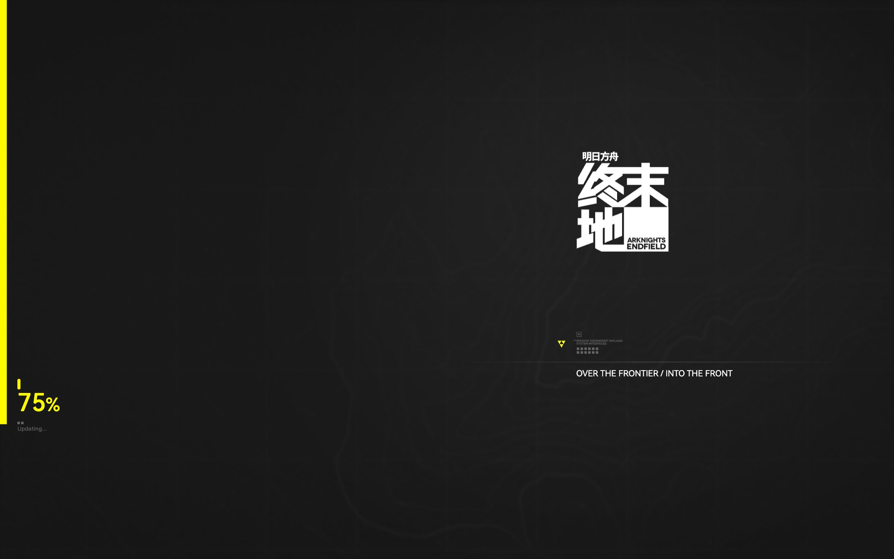
00–01Loading · Home「向渊行」
加载页：源石菱形旋转（OrigQuery_rotate）+ 百分比进度 + fadeIn。主视觉「武陵决战篇」：泼墨黑带压住右上角，红章「核心章节版本」，全平台下载矩阵（App Store、安卓、PS5、PC、TapTap）与云游戏卡常驻底部；「26 相伴庆典」角标。左轨图标导航贯穿全站。
h1 即版本口号（探针实锤）12+ CADPA 适龄前往游戏 常驻左下
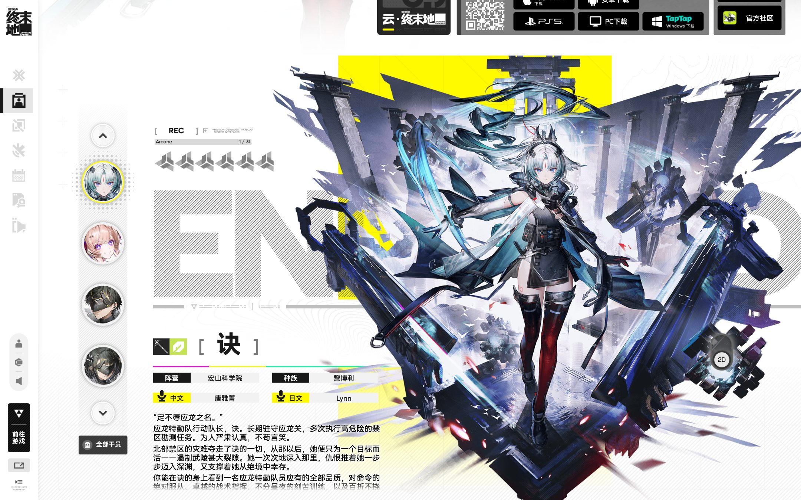
02Operator · 干员档案
1/31 干员画廊：左侧头像转轮，中列 REC 括号 + 星级 + 阵营/种族/中日配音字段表 + 引言与小传，右侧立绘叠在巨大的「END」水印与黄色故障贴片上，右下角 2D/3D 切换钮。品红/荧光绿的套印错位线贯穿档案条目——「印刷失准」是本章的装饰母语。
31 位干员（1/31 实锤）CMYK 套印色 #ff1aac + #00ffa2黄底信息胶囊
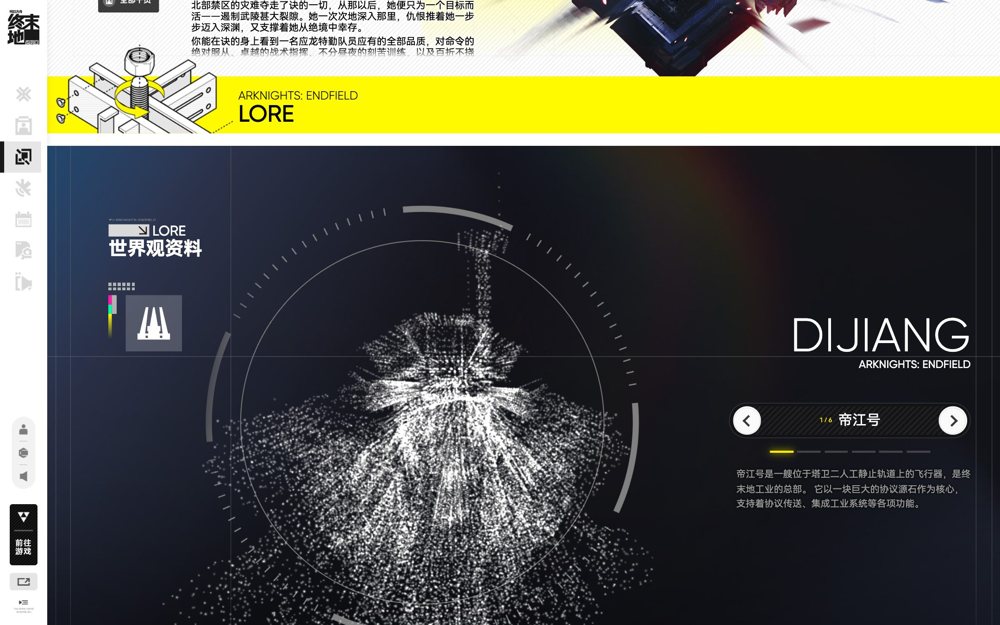
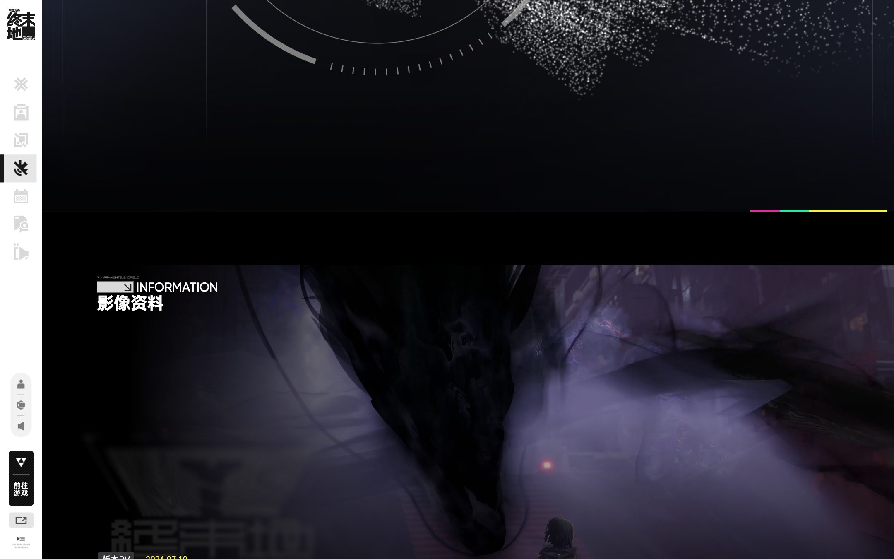
03Lore · 世界观资料（E.P.S 主场）
六座地标点云轮播（1/6 帝江号——「位于塔卫二人工静止轨道上的飞行器，终末地工业的总部」）。白点云悬浮在 HUD 圆环与刻度带中，扫描线掠过时点变黄；左右箭头切换时旧云碎落、新云自顶点亮、自转骤然加速再回稳。黄色分隔带里是螺栓爆炸图——制图母题的直白陈述。
六模型 218,441 点切换 = 双缓冲 + 三扫描线拖拽自转 + 惯性
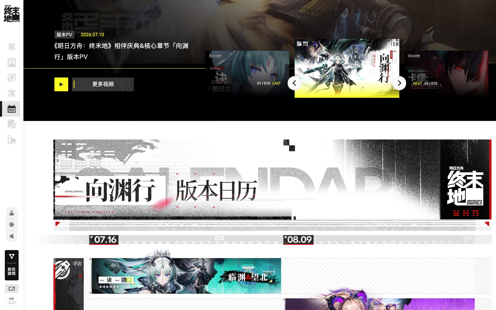
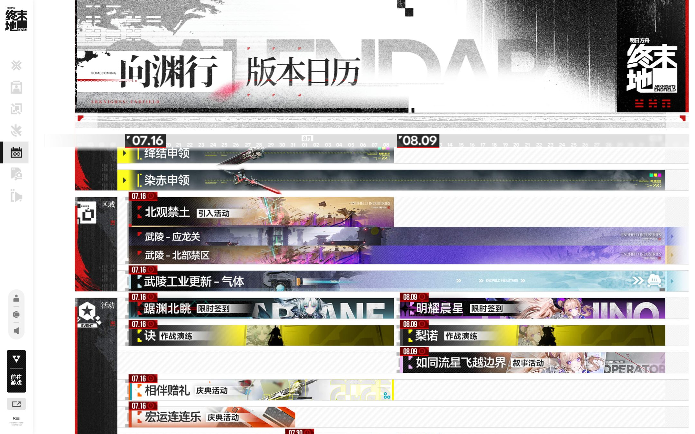
04–05Information · Calendar
影像资料：PV 档案库（版本 PV、动画短片，带日期戳），黑场大图 + 三色条右缘。内容日历：版本时间线与活动排期（downloadBgBreath 呼吸底、时间轴 timeline 素材）。
三段懒加载视频（probe video 3）timeline.png 已落盘
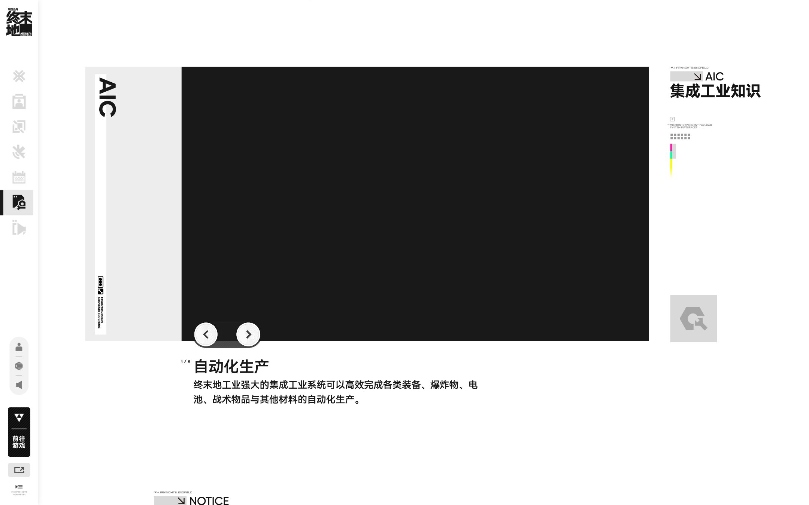
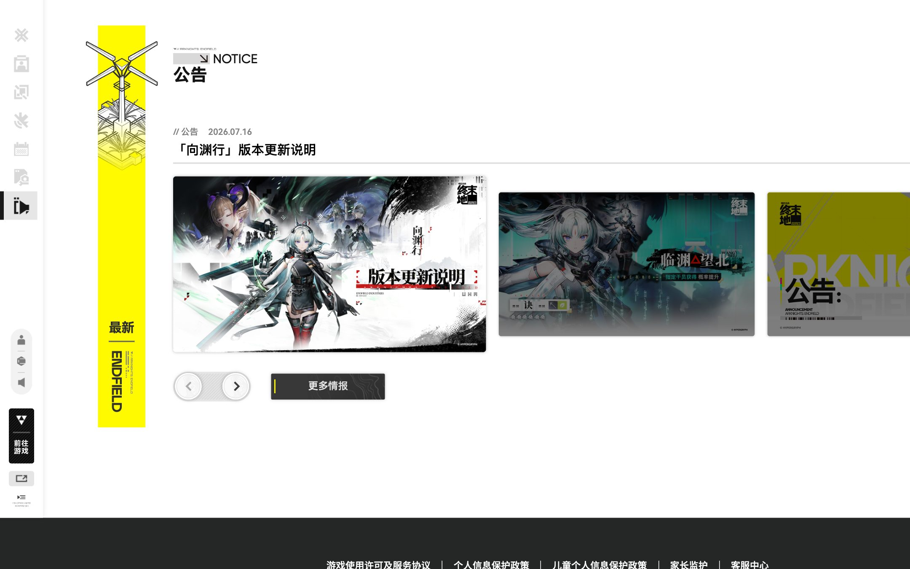
06–08Gameplay · AIC · Notice
玩法页（05-Gameplay flashing 闪烁贴片）；AIC 页（08-AIC：codePrinter 打字机代码块 + decoLine 装饰线 + Endfield/AK 双标）；公告终屏（06-Notice：notices.jpg 底图 + 官方社区/支付中心入口收束）。
codePrinter 打字机模块（CSS 模块名实锤）flashing 关键帧多章复用
H5 Walkthrough竖屏实测 · iPhone 13 视口 390×844 @3x · CDP 真触摸滑动
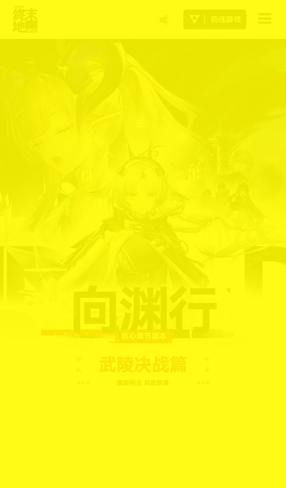
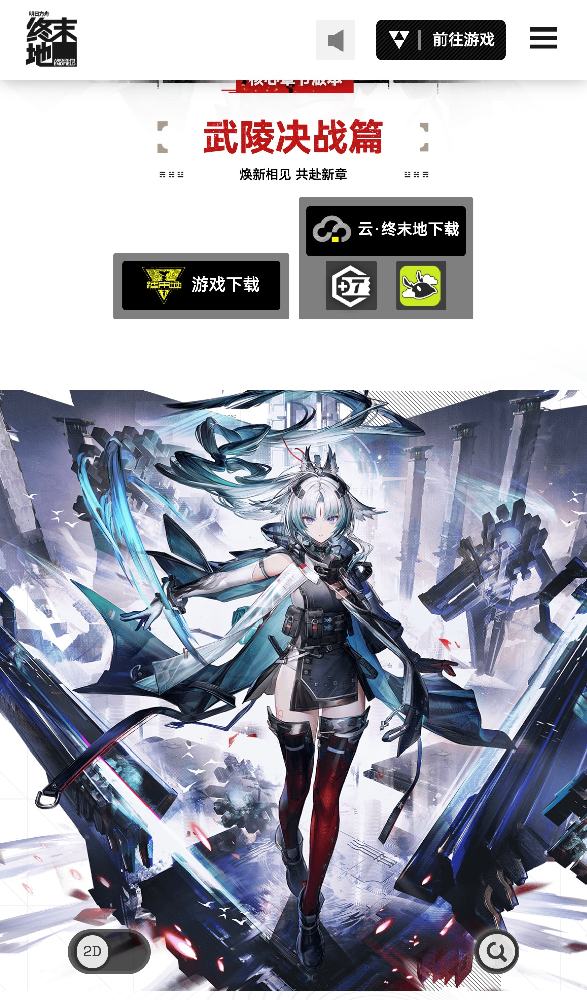
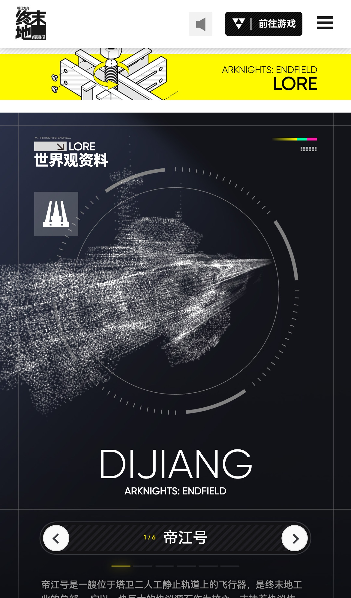
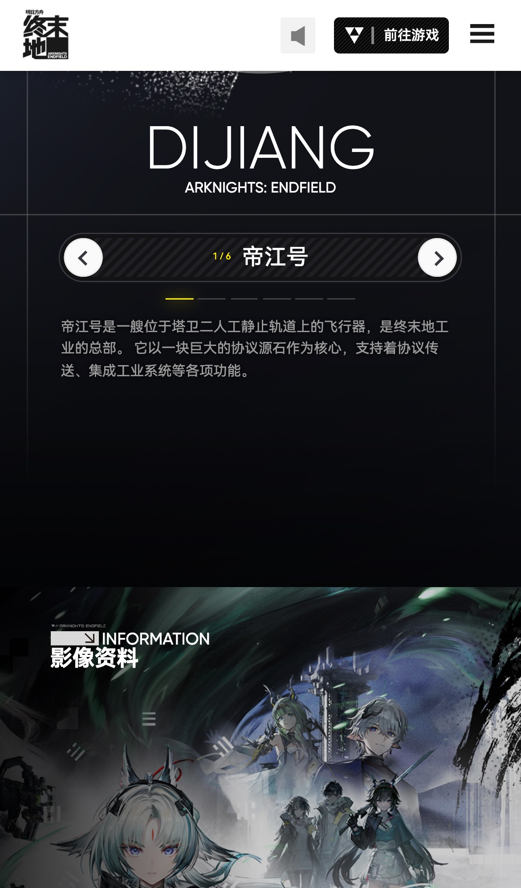
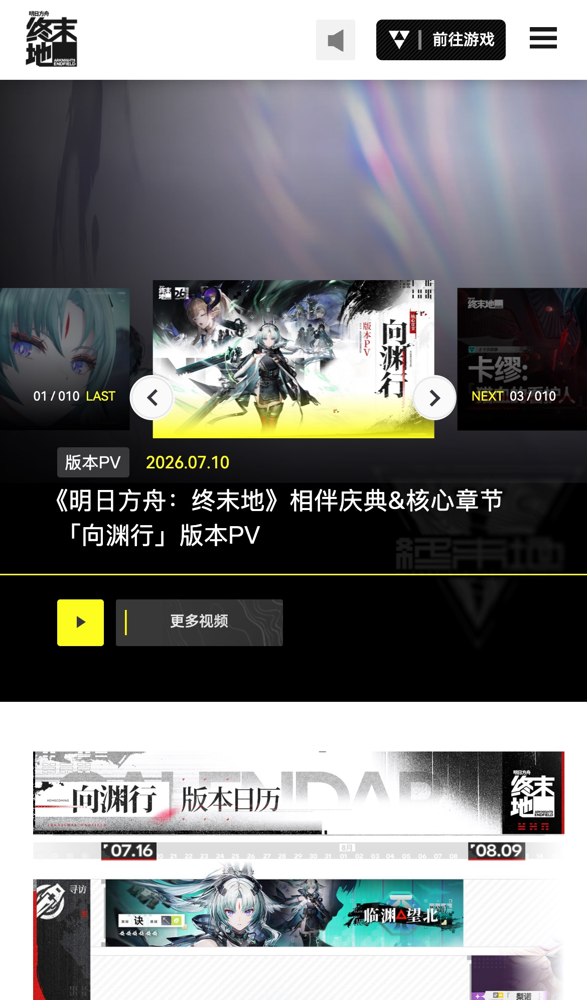
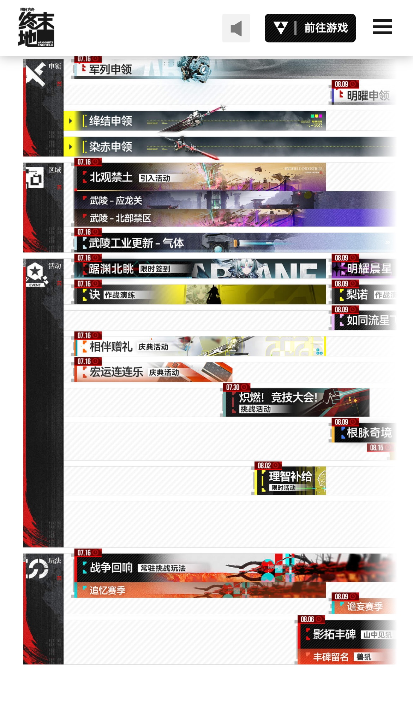
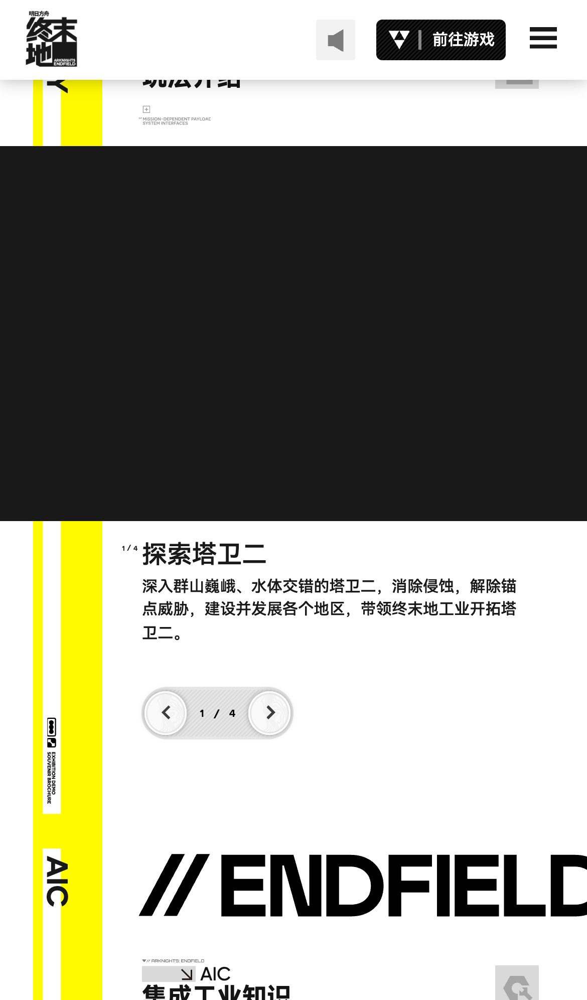
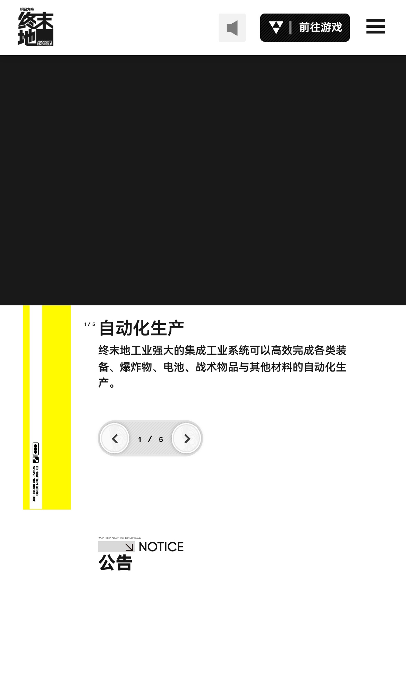
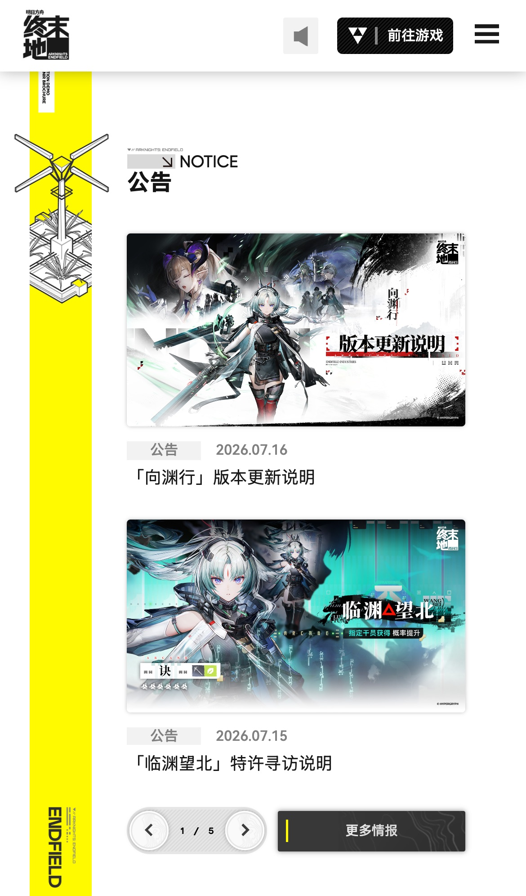
竖屏是另一套文档流而非同一页的响应式：普通长滚动（实测 scrollHeight 5,956px @ 664px 视口），hash 仍随滚动逐段同步（#home → #operator → #lore → #information → #calendar → #gameplay → #aic → #notice，与桌面同序）。html 字号实测 5.53px（390pt 宽），即竖屏 1080×1920 设计画布 rem 公式的直接输出。E.P.S 点云舞台在 H5 缺席——Lore 屏只剩顶部一撮装饰性粒子，六地标退化为 DOM 胶囊轮播（1/6 帝江号 + 左右圆钮，走查实锤）；重 WebGL 只供桌面。顶栏常驻：音频开关 + 「前往游戏」CTA + 汉堡菜单。
08↘
Craft
工艺细节| 细节 | 数值 / 出处（全部实锤） |
|---|---|
| 着色器中文注释 | 「=== glitch效果 ===」「亮度压缩插值，防止高密度过曝」「镜头暗角」——生产代码里的作者手迹 |
| 点精灵反过曝 | Reinhard 式压缩 c/(c+1) 与原色 mix(compressStrength=.5)——高密度处不糊成白团 |
| 非对称暗角 | 片元按 gl_FragCoord 计算，中心 x=0.4（点云偏左构图），左右衰减系数 0.8/0.6 不等 |
| 点尺寸公式 | gl_PointSize = size(4–8)×scale×distanceAlpha + 4.0（保底 4px） |
| 噪声全自产 | 类内实现 Perlin：2D fBm 三倍频（.5/.25/.125）256² 贴图 + 1D 噪声（激光调制） |
| 层级明暗 | alpha ×(−0.25·layer+1.25)——第 1 层最亮，3 层景深感 |
| 荧幕比固定 | renderer 固定高 1080，宽随容器——保证点尺寸在任何窗口一致 |
| 视频逐帧回调 | requestVideoFrameCallback，Android 强制回退 rAF（UA 判定） |
| 抠像三级降级 | WebGL2 → WebGL → Canvas2D getImageData（同一亮度公式 .3/.59/.11） |
| rem 图纸缩放 | 2560×1440 设计画布；鸿蒙系浏览器 viewport 以 DPR 重写 |
| 加载中文报错 | 「网络请求失败」「加载二进制文件失败」——面向自己人的错误日志 |
| swiper 局部使用 | 干员/资料轮播（swiper-icons 字体与 preloader 关键帧在册） |
09↘
Replicate
复刻要点:root{
--ink:#191919; --paper:#fff;
--yellow:#fffa00; /* 唯一强调 */
--panel:#35373c; --grey:#d9d9d9;
--magenta:#ff1aac; --green:#00ffa2; /* 套印双色 */
--ease-hard:cubic-bezier(1,0,.7,1);
}
/* 点云数据管线（原站口径） */
fetch(bin) → Float32Array(xyz…)
AABB → scale = 1900/heightY → 居中
pointMoreData[i] = [1, rand(4,8),
randInt(1,3), rand(−100,100)]
// active · size · layer · delay
// 扫描线点亮（核心 20 行） */ scanY(i,t) = anime(−1150 → 1350, duration = 3000/(i+1), delay = 2000·ln(i+1), easeInOutQuad) 显示带 = scanY − 200 点着色: |y−带| < 20 → vec3(1,1,.2) 否则 vec3(.8,.8,.8) 上方未达点: alpha = cos(d·π/200) 截断于 d≥100 熄灭时下方点: y −= 0.05·d²（碎落） // 故障 */ 每 4–6s: 3–6 连发×80ms，每发 6–8 条带 带内 x += 20px × rand(−5,5) // 亮度抠像片元 */ float b = dot(color, vec3(.3,.59,.11)); gl_FragColor = vec4(color, uReverse ? 1.−b : b);
工程坑（源码里可见的应对）：点数几万时必须 pixelRatio 降级（原站 renderLevel 2 → 0.75）；激光束用实例池复用而非增删对象；WebGL 上下文数量珍贵——抠像视频共用一个离屏管线；点云切换期间用双缓冲 actor，永远不改在播几何；Android 的 requestVideoFrameCallback 兼容性要 UA 兜底。
10↘
Provenance
出处与方法 · 页内简版实锤（直接抽取）
- 计算样式探针 + 九份 CSS（372,886 B）
- 20 个 Next.js chunk 全量下载，E.P.S 与 trans-video 逐行精读（含着色器全文与中文注释）
- 六个点云 .bin 全部落盘并复算点数（合计 218,441）
- 15 个字体文件 + 18 张图像资产 + 关键帧 + 录屏
- 14 张逐屏截图（SwiftShader 渲染 WebGL 成功）
推断
- 中文字族为 HarmonyOS Sans 系或等价定制（SDK 注入、UA 分支中反复出现鸿蒙关键词；未取到文件，中）
- 点云由游戏模型离线采样烘焙（数据形态 + 场景一致性，高）
11↘
Verdict
评审结论终末地官网的杀手锏是「把游戏的工业世界观翻译成 Web 的仪器语言」：预烘焙点云 + 扫描线 + 激光 + 故障，全部自研自持（连噪声都不引库）；而印刷层的套印错位与荧光黄警示，让屏幕看起来像一张被扫描进终端的图纸。五份文档：设计解构 · 复刻指南 · 出处与方法 · 事实核查 · 设计评审